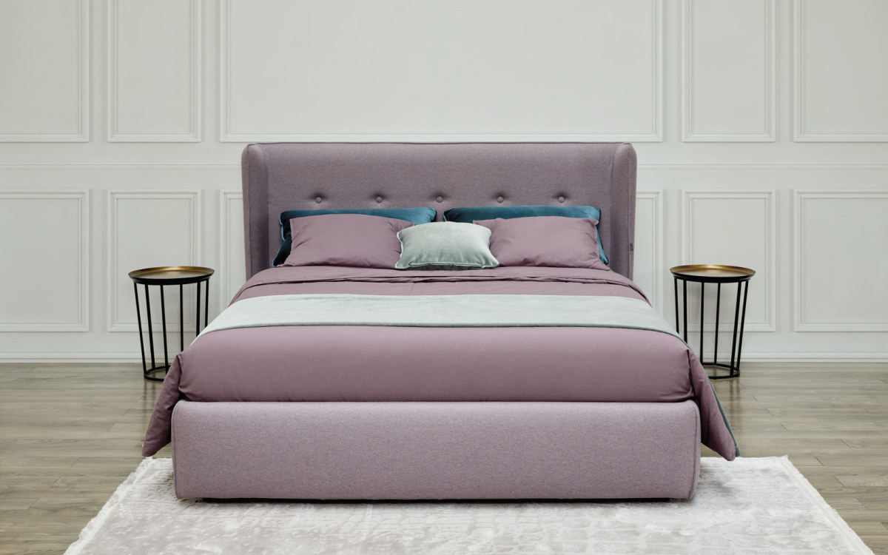

Baldurama – miegamojo lovos internetu
 ATLIKTI UŽSAKYMAI 4751 24/7 +370 672 23477 info@baldurama.lt 0 0 Products ProductPeržiūrėti prekių krepšelį Pirkti
0.00 EUR VisoPeržiūrėti prekių krepšelį Pirkti
Atsiliepimai Užsakymo formavimas Apmokėjimas Pristatymas Grąžinimas GarantijosProdukcija Apie mus Kontaktai Klauskite Kategorijos Virtuvės baldai Virtuvės baldų komplektai Valgomojo komplektai Virtuvės kampai Stalai su medinėmis kojomis Stalai su metalinėmis kojomis Kėdės su medinėmis kojomis Kėdės su metalinėmis kojomis Baro kėdės Valgomojo baldai Valgomojo komplektai Stalai su medinėmis kojomis Stalai su metalinėmis kojomis Kėdės su medinėmis kojomis Kėdės su metalinėmis kojomis Baro kėdės Svetainės baldai Minkšti svetainės kampai Minkšti svetainės komplektai Sofos lovos Foteliai Pufai Svetainės komplektai/sekcijos Indaujos Komodos Staliukai TV staliukai Lentynos Kolekcijos Svetainės kolekcijos Vaikų kambario kolekcijos Miegamojo kolekcijos Biuro baldų kolekcijos Miegamojo baldai Komplektai Lovos Čiužiniai Antčiužiniai Spintos Komodos Grotelės lovoms Pagalvės Naktinės spintelės Vaikų kambario baldai Vaikiškų baldų kolekcijos Foteliai Lovos Sofos lovos Spintos Komodos Lentynos Rašomieji stalai Prieškambario baldai Komplektai Spintos Komodos Lentynos Vonios Vonios baldų komplektai Išpardavimas Gera kaina Miegamojo baldai Lovos
Miegamojo lovos
513.00 EUR SUPER AKCIJA ! Lova M011 + grotelės + čiužinysGalimi išmatavimai 90; 120; 140; 160; 180; 200. Platus spalvų pasirinkimas. Kaina nuo pasirinktos spalvos nesikeičia.
631.00 EUR SUPER AKCIJA ! Lova M011 + patalynės dėžė su grotelėmis + čiužinysGalimi išmatavimai 90; 120; 140; 160; 180. Platus spalvų pasirinkimas. Kaina nuo pasirinktos spalvos nesikeičia.
469.00 EUR SUPER AKCIJA ! LOVA M010 + GROTELĖS + ČIUŽINYSGalimi išmatavimai 90; 120; 140; 160; 180; 200. Platus spalvų pasirinkimas. Kaina nuo pasirinktos spalvos nesikeičia.
577.00 EUR SUPER AKCIJA ! LOVA M010 + PATALYNĖS DĖŽĖ SU GROTELĖMIS + ČIUŽINYSGalimi išmatavimai 90; 120; 140; 160; 180. Platus spalvų pasirinkimas. Kaina nuo pasirinktos spalvos nesikeičia.
469.00 EUR SUPER AKCIJA ! LOVA M014 + GROTELĖS + ČIUŽINYSGalimi išmatavimai 140; 160; 180. Platus spalvų pasirinkimas. Kaina nuo pasirinktos spalvos nesikeičia.
488.00 EUR SUPER AKCIJA ! Lova LE051 + grotelės + čiužinysGalimi išmatavimai 140; 160; 180. Platus spalvų pasirinkimas. Kaina nuo pasirinktos spalvos nesikeičia.
559.00 EUR SUPER AKCIJA ! Lova LE051 + patalynės dėžė su grotelėmis + čiužinysGalimi išmatavimai 140; 160; 180. Platus spalvų pasirinkimas. Kaina nuo pasirinktos spalvos nesikeičia.
342.00 EUR NAUDINGAS PASIŪLYMAS! Lova M012 + grotelės + čiužinysGalimi išmatavimai 80; 90; 100; 120; 140; 160; 180. Platus spalvų pasirinkimas.
479.00 EUR SUPER AKCIJA ! Lova AF 160 SU PATALYNĖS DĖŽE IR GROTELĖMISKaina su patalynės dėže ir grotelėmis. Platus spalvų pasirinkimas.
275.00 EUR Lova LE040 su grotelėmisGalimi išmatavimai 140; 160; 180. Platus spalvų pasirinkimas. Kaina nuo pasirinktos spalvos nesikeičia.
395.00 EUR Lova LE040 su patalynės dėže ir grotelėmisGalimi išmatavimai 140; 160; 180. Platus spalvų pasirinkimas. Kaina nuo pasirinktos spalvos nesikeičia.
492.00 EUR NAUDINGAS PASIŪLYMAS! Lova M012 + grotelės + patalynės dėžė + čiužinysGalimi išmatavimai 90; 120; 140; 160; 180; 200. Platus spalvų pasirinkimas.
389.00 EUR NAUDINGAS PASIŪLYMAS! Lova LE057 CONTINENTALLova su Bonell tipo čiužiniu. Platus spalvų pasirinkimas. Kaina nuo pasirinktos spalvos nesikeičia. Galimi išmatavimai 160; 180.
569.00 EUR Lova M064 su patalynės dėže ir grotelėmisGalimi išmatavimai 140; 160; 180. Platus spalvų pasirinkimas. Kaina nuo pasirinktos spalvos nesikeičia.
689.00 EUR Lova M056 su patalynės dėže ir grotelėmisGalimi išmatavimai 140; 160; 180. Platus spalvų pasirinkimas. Kaina nuo pasirinktos spalvos nesikeičia.
569.00 EUR SUMAŽINTA KAINA Lova LE050 su grotelėmisGalimi išmatavimai 140; 160; 180. Platus spalvų pasirinkimas. Kaina nuo pasirinktos spalvos nesikeičia.
329.00 EUR Lova LE044 su grotelėmisGalimi išmatavimai 140; 160; 180. Platus spalvų pasirinkimas. Kaina nuo pasirinktos spalvos nesikeičia.
449.00 EUR Lova LE044 su patalynės dėže ir grotelėmisGalimi išmatavimai 140; 160; 180. Platus spalvų pasirinkimas. Kaina nuo pasirinktos spalvos nesikeičia.
349.00 EUR NAUJIENA LOVA LE057 SU GROTELĖMISGalimi išmatavimai 140; 160; 180. Platus spalvų pasirinkimas. Kaina nuo pasirinktos spalvos nesikeičia.
429.00 EUR NAUJIENA LOVA LE057 SU PATALYNĖS DĖŽE IR GROTELĖMISGalimi išmatavimai 140; 160; 180. Platus spalvų pasirinkimas. Kaina nuo pasirinktos spalvos nesikeičia.
349.00 EUR NAUJIENA LOVA LE056 SU GROTELĖMISGalimi išmatavimai 140; 160; 180. Platus spalvų pasirinkimas. Kaina nuo pasirinktos spalvos nesikeičia.
429.00 EUR NAUJIENA LOVA LE056 SU PATALYNĖS DĖŽE IR GROTELĖMISGalimi išmatavimai 140; 160; 180. Platus spalvų pasirinkimas. Kaina nuo pasirinktos spalvos nesikeičia.
587.00 EUR Lova M072 CONTINENTALGalimi išmatavimai 140; 160; 180. Tai išskirtinė, ekskliuzyvinė lova, ieškantiems komforto.
1596.00 EUR Lova M071 CONTINENTALGalimi išmatavimai 160; 180. Tai išskirtinė, ekskliuzyvinė lova, ieškantiems komforto.
1..24 25..48 49..72 73..96 97..120 121..144 Informacija Apie mus Kontaktai Klauskite Svetainės struktūra Pirkėjui Atsiliepimai Užsakymo formavimas Apmokėjimas Pristatymas Grąžinimas Garantijos Mokėjimo būdaiPartneriai
Baldai pagal individualius projektus
www.redosbaldai.lt
Laba diena, labai džiaugiamės puikia lova ir čiužinys patogus, geros kokybės. Ačiū.
RimaLaba diena, Viskas patiko ir tiko:) Gražių švenčių!!!
ViktoriaACIU, BALDAI BUTENT TOKIE KOKIU NOREJOME, KEDZIU SPALVA FAINA. ESAME LABAI PATENKINTI. PASIZVALGYSIME DAR KAZKO PAS JUS ☺ GEROS PREKYBOS JUMS. ESATE PUNKTUALUS, KAIP SAKETE DEL PRISTATYMO TAIP IR BUVO.
JoanaDidelis AČIŪ už kantrybę padedant išsirinkti vaiko kambario baldus. Sėkmės jums!
DanutėAčiū jums už greitą pristatymą, nesitikėjome, kad taip greitai atvešite. Kampas toks, kokio ir tikėjomės. Dėkojame.
DeividasNorime padėkoti už valgomojo stalą su kėdėmis. Kokybė piuki ir aptarnavimas geras.
VilniusValgomojo stalu ir kėdėmis likau patenkintas, pristatymas ankščiau termino. Planuoju dar sekciją užsakyti. Tikiuosi tokio pačio aptarnavimo.
TomasDėkoju už lovą Kler. Kokybė puiki ir išvaizda atitiko nuotrauką. Reiks dar užsakyti spintą, bet kol kas dar renkuosi. Iki.
AlvidaLaba diena, Nuostabi sofa, nesitikėjau, kad taip puikiai ji atrodys. Pristatyta numatytu laiku. Ir didelis ačiū už puikią dovaną - dvi prie sofos gobaleno pritaikytas pagalves.
Šarūnė P.Nudžiugino užsakyta lova, viskas taip kaip ir tikėjomės. Jau svarstome, kad reiktų atsijaujinti miegamojo spintą, manau taip pat rinkimės iš balduramos asortimento. Sėkmės
AntanasPirkau du kartus, vairuotojų darbą abiem atvejais vertinu puikiai. Antro užsakymo teko palaukti ilgiau, nei planuota, bet vis tiek vertinu gerai.
SimonaSveiki, baldurama kolektyve ir pirkėjai. Noriu parekomenduoti šią parduotuvę, nes kiek perkame, tiek esame patenkinti. Komanda, dirbate labai gerai. ačiū
JolitaSveiki, dėkoju už baldą, labai patinka, atrodo kokybiškas
AurimasSveiki, Ačiū už minkšta kampą. Labai patenkinti pirkiniu.
Sigitas D.Pirkau minksta kampa, kokybe puiki. Aciu uz malonu ir kokybiska aptarnavima.
BroniusAptarnavimas puikus, baldus gavau ankščiau termino. Galiu rekomenduoti. Taip ir toliau. Sėkmės.
ZitaLaba diena. Užsisakėm valgomojo komplektą 19. Atrodo kokybiškai. Pasinaudojome užnešimo paslauga, pristatymui taip pat priekaištų neturime.
Rima KulikauskienėLaba diena, norime parašyt atsiliepimą apie šią įmonę. Užsisakėme lovą, o ji atvyko be kojelių, o tai pastebėjome tik ją montuodami, TAČIAU susisiekus su BalduRama komanda, jie labai nuoširdžiai atsiprašė ir kojeles gavome jau už keleto dienų. Esame labai patenkinti tokiu Jūsų darbu. Rekomendavome kaimynams :)
JustinaLaba diena, pirkome lovą M069, lova tikrai atrodo kokybiška. Rekomenduojame kaip rimtą ir patikimą įmonę, kuri turi platų baldų asortimentą.
IevaAčiū už platų miegamojo lovų pasirinkimą, tik pas Jus radome tai, ko ieškojome.
Klauskite Informuojame, jog svetainėje yra naudojami slapukai (angl. cookies) Sutikdami, paspauskite mygtuką 'Sutinku'.Sutikimą bet kada galėsite atšaukti ištrindami įrašytus slapukus savo interneto naršyklės nustatymuose.
Tęsdami naršymą svetainėje jūs sutinkate su slapukų naudojimo sąlygomis. Sutinku Sužinoti daugiau